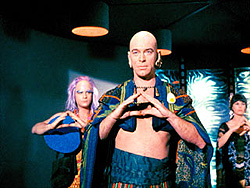
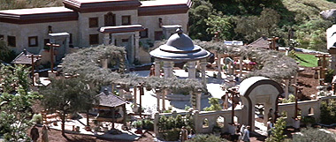
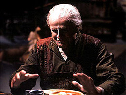

|

Clique
aqui para visitar o
Acervo de colunas

|

| Tecnologia e Humanismo em Jornada
Costumo dizer que a era da comunicação é, na verdade, a era das empresas de comunicação, principalmente as telefônicas. Hoje em dia as operadoras de telefonia jogam vários comerciais em cima das nossas cabeças todos os dias, com custos cada vez maiores. Sem contar as ligações inoportunas que tiram o sossego da gente por vários motivos.Por isso, me recuso a comprar um celular! Sou parte da população mundial que não tem um aparelho desses por vontade própria. Loucura? Há gente que toma umas decisões assim por causa do lado negro da modernização tecnológica. Como toda obra de ficção científica, Jornada nas Estrelas tem muitos technobables e fenômenos extraordinários apresentados através dos efeitos especiais com muita criatividade e inovação. Mas, suas histórias não deixam de mostrar criticamente os problemas que isso traz às pessoas. Imaginem viver num mundo sem tecnologia, onde ela é abandonada em nome da harmonia e da felicidade e do bem-estar de todos. Há algum tempo, tenho cultivado o hábito de passar as férias em lugares que são considerados paradisíacos, com muita natureza bonita e pouca civilização, gente tentando viver de modo alternativo, com pouca sofisticação para o atendimento das necessidades básicas de comer, beber, dormir e perder algum tempo com atividades prazeirosas, sem ir além de um CD player portátil para ouvir reggae, blues, MPB e rock. Ainda há vários cantos assim espalhados pelo Brasil, onde a juventude das grandes cidades tenta se "esconder" do progresso e do ritmo louco da vida urbana. No litoral e no interior, o país fica cheio de visitantes nativos e estrangeiros que buscam refúgio. Esse pessoal vive um estilo parecido com os hippies dos anos 60 e as diversas comunidades alternativas que foram criadas pelo mundo posteriormente. Muitos não carregam nem mesmo telefone celular ou aquela bagulhada toda que simboliza o cotidiano; às vezes aparece alguém de câmeras de vídeo pequenas ou embutidas nos celulares; vários vão de carro, é claro, mas, televisão, nem pensar... Isto demonstra que existe um certo desprezo e desconfiança de alguns sobre a utilidade do universo de aparelhos tecnológicos que temos hoje e estamos desenvolvendo para o futuro.
Em outro episódio, "The Way of Eden", Spock também está no centro
da cena, dialogando com o Dr. Sevrin, líder de uma comunidade neo-hippie. Seus
integrantes rejeitaram a vida tecnológica do século 23 e percorrem o espaço em
busca do paraíso perdido. Isto é bastante parecido com algumas das muitos refúgios
tropicais que temos em nosso mundo.   No contexto de A Nova Geração, temos o filme para cinema "Insurreição", onde a vida dos Bak'u é mostrada de forma bucólica e tranqüila, com uma rotina rural e de pequena manufatura. Na avaliação desse povo, os artefatos tecnológicos podem ser deixados de lado em troca de uma vida pacífica e feliz. Sabemos o que isso representa de contraste com o padrão da Federação e dos Son'a, que cobiçam o planeta dos Bak'u, escondendo que são seus descendentes que emigraram por se recusarem a viver de maneira pré-industrial, mas cobiçam o mito da eterna juventude.
 Pelo que andei pesquisando no computador-biblioteca, não vi nenhum episódio de Voyager ou Enterprise que tratassem diretamente dessa temática. Seria importante saber se tal omissão foi proposital ou apenas uma mera coincidência, já que o tema civilização tecnológica vs. humanização é um tópico recorrente não só em Jornada, mas no gênero ficção-científica. Ainda mais numa época onde passamos por mais uma grande transformação dos padrões de parafernália tecnológica que infestam nosso cotidiano da vida econômica, política e cultural: biotecnologia, ecologia, transportes, comunicações, computação, alimentação, segurança, educação, defesa, trabalho etc. Este é um assunto tão vasto, meio na base criador vs. criatura, que jamais nos livraremos dele. A partir do contexto de cada época sempre haverá algum questionamento ou prognóstico a favor ou contra. Portanto, não dá pra dizer muito além, a não ser que a caixa de Pandora foi aberta e que, no fundo, só nos resta a esperança de, talvez num dia, possamos chegar a um razoável equilíbrio. Quem sabe? É possível que venhamos a ter contato com uma civilização como a vulcana, capaz de nos ajudar a compatibilizar o aparato tecnológico com a sabedoria e o bem-estar.
|
 Oi
pessoal. Vou contar um segredo a vocês: quando eu tinha meus 7, 8 anos e via Jornada
nas Estrelas em preto e branco nos anos de 1970, era um dos que sonhava em
ter um comunicador, assim como a tripulação da Enterprise.
Oi
pessoal. Vou contar um segredo a vocês: quando eu tinha meus 7, 8 anos e via Jornada
nas Estrelas em preto e branco nos anos de 1970, era um dos que sonhava em
ter um comunicador, assim como a tripulação da Enterprise. Nos
episódios e filmes de Jornada nas Estrelas esse tema foi razoavelmente
explorado, conforme podemos ver a seguir; na Série Clássica há o sentimento
de que a máquina não pode terá mesma sensibilidade que os seres humanos, como,
por exemplo, em "The Ultimate Computer", onde o Dr. Richard Daystron
apresentou para a Frota Estelar o seu projeto de mais alto padrão tecnológico
na área da computação, o chamado M-5. Então, vemos Spock desafiar a capacidade
lógica do equipamento que destruiu vidas humanas, inclusive ameaçando a tripulação
da Enterprise. Nesta ocasião, o Dr. McCoy, como um bom médico do interior, representa
bem esse lado sentimental que jamais admitiria a superação do homem pela máquina.
O nosso bom doutor lembra a impossibilidade das naves serem totalmente automatizadas
por causa da sua falta de intuição e inteligência reflexiva, capaz de avaliar
as variáveis para além da lógica. Kirk e Spock dão a solução final quando põem
o M-5 diante de um simples dilema, que conflita criador vs. criatura. Assim, o
sonho de Daystron acaba frustrado e ele mesmo se torna uma vítima da sua criatura.
Nos
episódios e filmes de Jornada nas Estrelas esse tema foi razoavelmente
explorado, conforme podemos ver a seguir; na Série Clássica há o sentimento
de que a máquina não pode terá mesma sensibilidade que os seres humanos, como,
por exemplo, em "The Ultimate Computer", onde o Dr. Richard Daystron
apresentou para a Frota Estelar o seu projeto de mais alto padrão tecnológico
na área da computação, o chamado M-5. Então, vemos Spock desafiar a capacidade
lógica do equipamento que destruiu vidas humanas, inclusive ameaçando a tripulação
da Enterprise. Nesta ocasião, o Dr. McCoy, como um bom médico do interior, representa
bem esse lado sentimental que jamais admitiria a superação do homem pela máquina.
O nosso bom doutor lembra a impossibilidade das naves serem totalmente automatizadas
por causa da sua falta de intuição e inteligência reflexiva, capaz de avaliar
as variáveis para além da lógica. Kirk e Spock dão a solução final quando põem
o M-5 diante de um simples dilema, que conflita criador vs. criatura. Assim, o
sonho de Daystron acaba frustrado e ele mesmo se torna uma vítima da sua criatura.